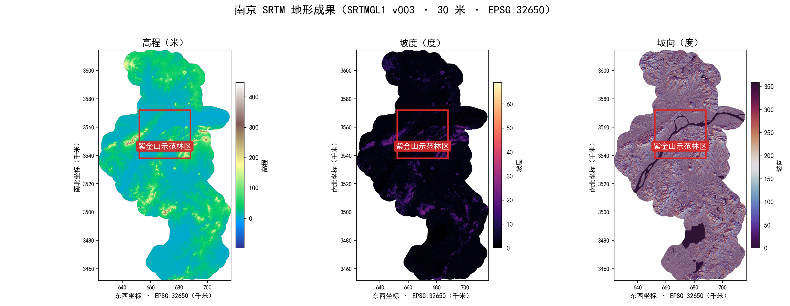

多源输入蓝/青=环境 · 红=火情 · 绿=机群 · 金=约束
地形SRTM 30米 高程/坡度/坡向
气象风速/风向/温湿度/降水
植被WorldCover 土地覆盖
水体与取水OSM 水体 · 候选水源
道路OSM 路网与通行性
火情感知航拍影像 · YOLO/VLM
机群状态12 架 UAV · SOC/载荷
库存与约束W20/C6/电池 · 用户要求
统一化处理管线协同层五步
1 坐标关联报警点为入口
半径检索 5 千米
2 单位统一米/度/升/千克/%
字段口径对齐
3 来源标注source · mode
采集时间 · 坐标系
4 环境快照snapshot_id = envsnap-哈希
不可变 · 随方案版本绑定
5 黑板共享六角色读取同一份
结构化任务上下文
统一任务态势五类状态输出
火情状态
环境状态
人员状态
资源状态
任务约束
进入控制层预测火势 · 生成调度方案
来源标注契约
每项数据同时保留
source（来源服务）
mode（在线 / 离线）
采集时间（含 stale 标注）
坐标系（EPSG:32650 / 4326）
状态（verified 等）
环境刷新产生新观测并生成新快照；
新方案引用新快照，历史方案
保留原决策依据，全程可追溯。
地形证据 · 南京 SRTM 30 米离线交付成果 高程 / 坡度 / 坡向三联 · 红框为紫金山示范林区任务点（32.0688°N, 118.8432°E）· 坡度→K_slope · 植被→K_fuel · 风速→K_wind · 水体→取水候选
